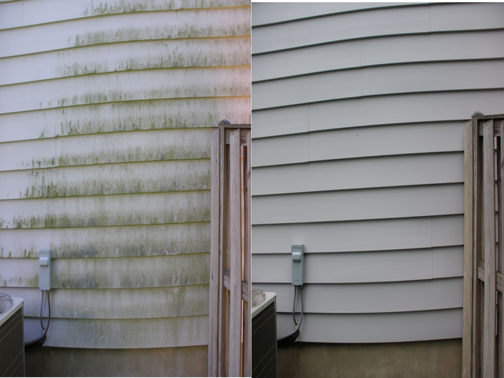

Driveways
Oil haze, tire marks, pollen buildup, and everyday stains cleaned for a better curb-view finish.
Ladson and Charleston-area service
Driveways, decks, siding, patios, and storefronts cleaned with a mobile pressure washing rig and a sharp eye for curb appeal.
Driveways • House washes • Decks • Patios • Storefronts
What we clean
Driveways, siding, decks, patios, and storefronts cleaned with practical scheduling and straightforward estimates.
Oil haze, tire marks, pollen buildup, and everyday stains cleaned for a better curb-view finish.
Low-pressure siding rinse for algae, dust, and cobwebs without beating up paint or trim.
Foam, rinse, and reveal the warm surface underneath without making everything feel sterile.
Walkways, entry pads, gum spots, and first-impression zones cleaned before customers arrive.
Quick estimate
Uses Ladson and Charleston-area pressure washing ranges as a starting point. Final pricing can still change after photos, access, stains, water availability, and exact service area.
Before and after

Local service
Shawn's Pressure Washing keeps the focus where it belongs: clean concrete, brighter siding, tidy patios, and reliable communication. The site keeps the service details clear while the trailer setup gives the brand a memorable local look.
Service area: Ladson, Charleston, and nearby Lowcountry neighborhoods.
Good to know: final quotes depend on photos, access, stains, water availability, and job size.
Book a rinse